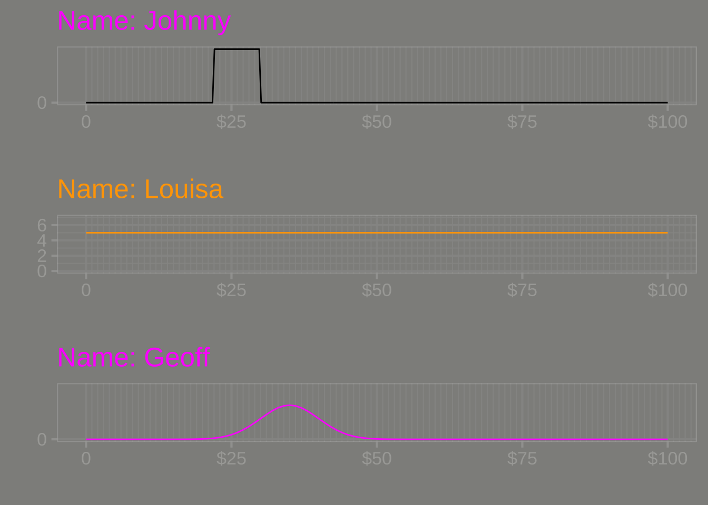
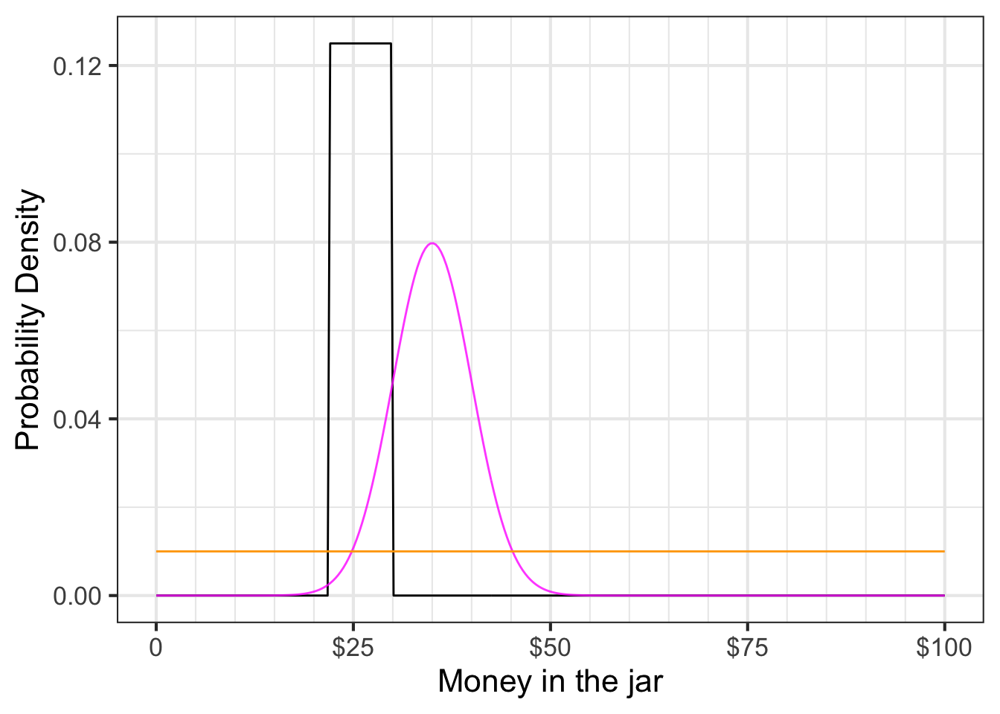
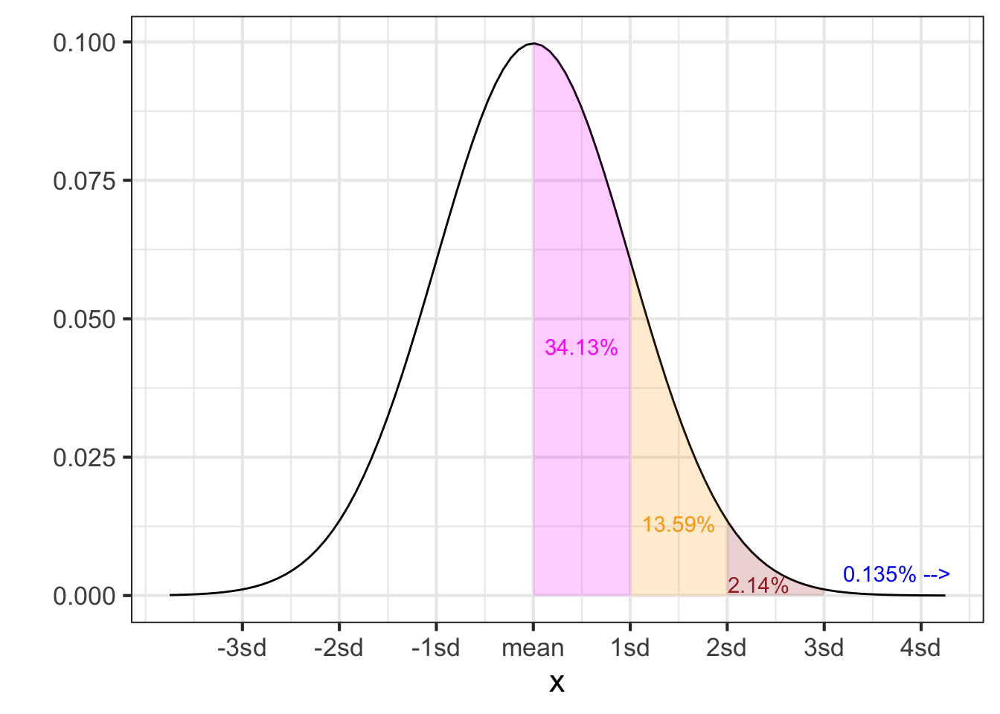
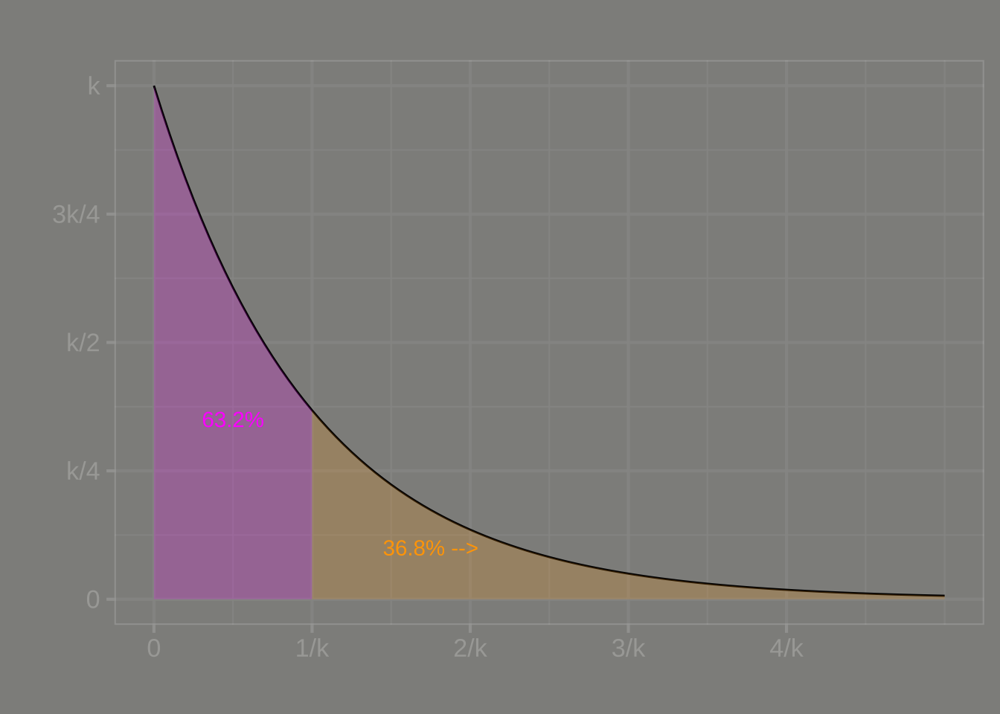
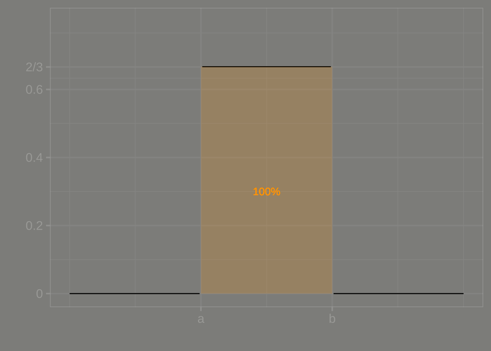
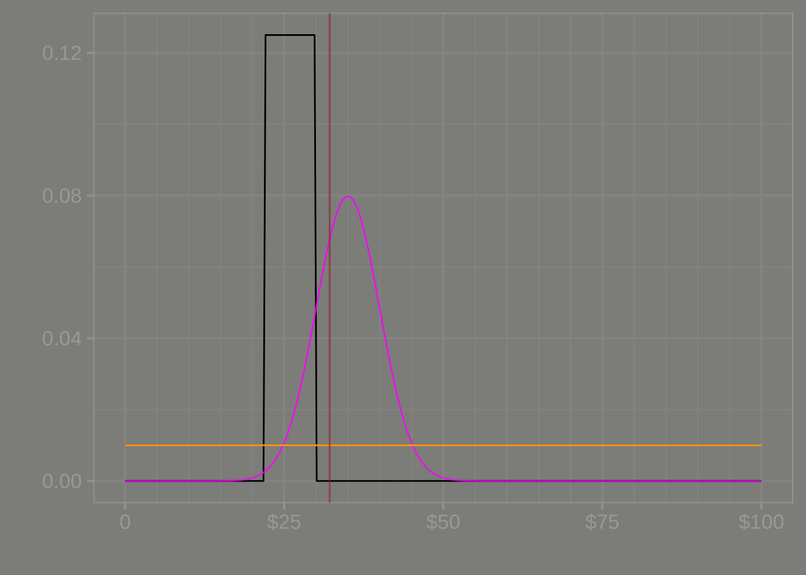
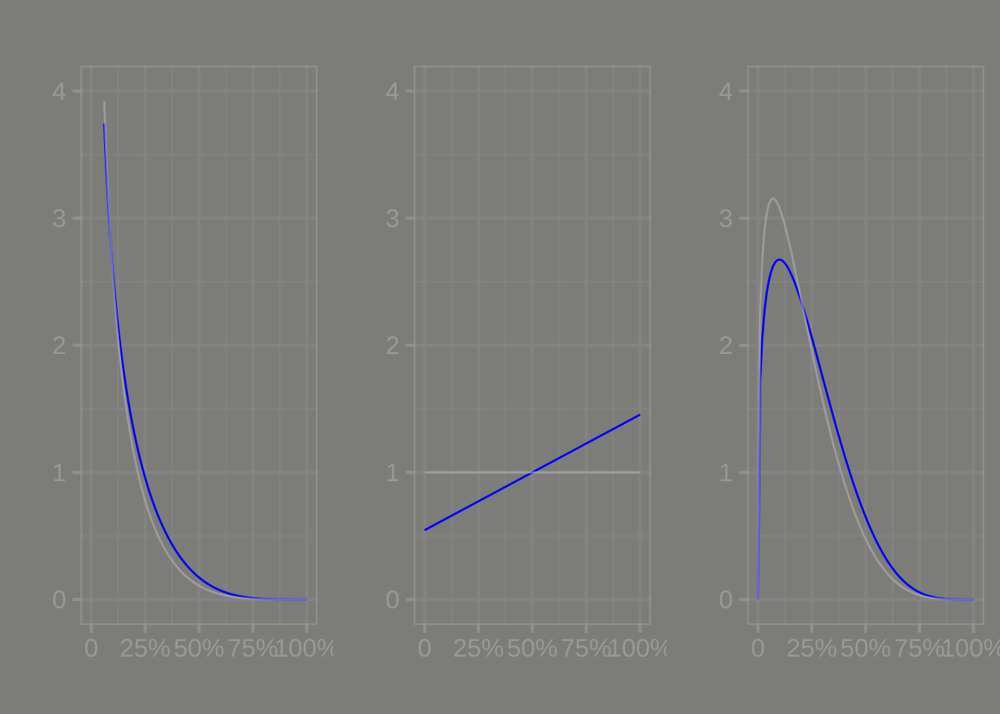
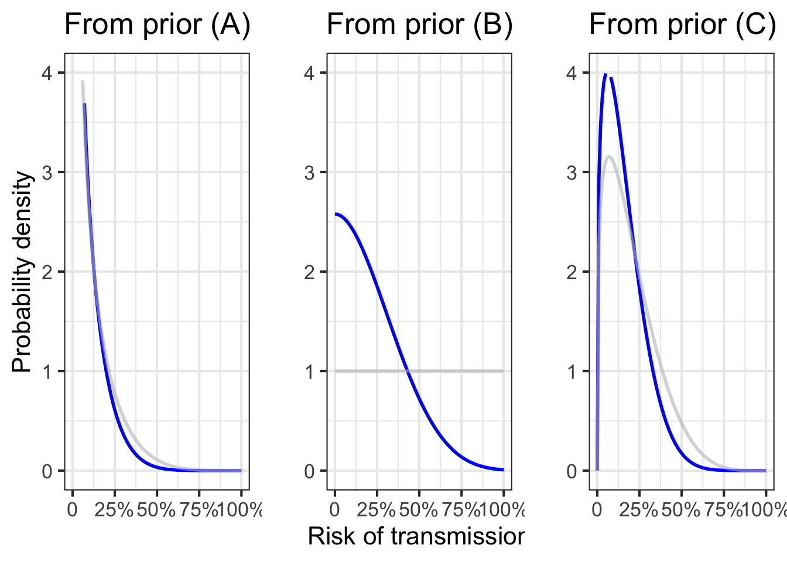
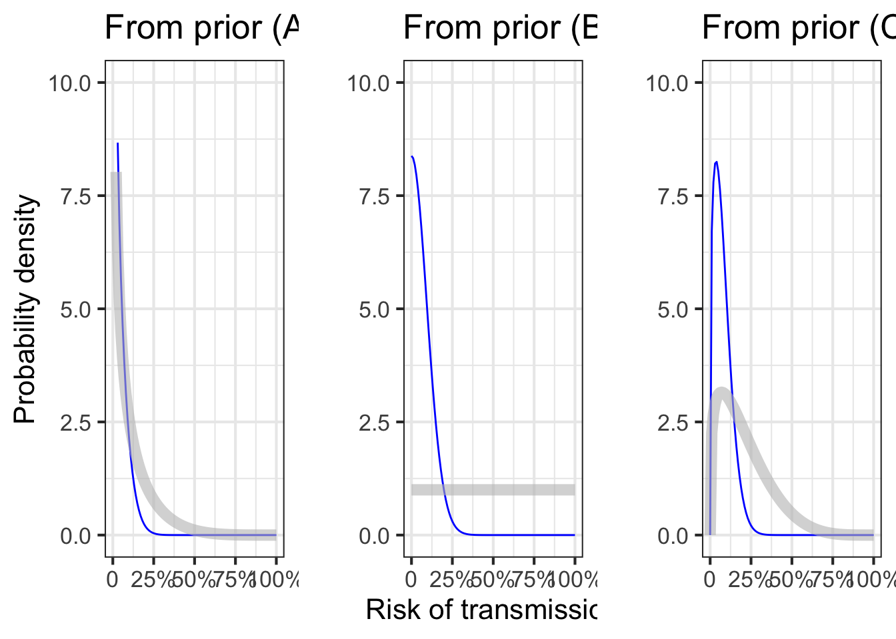

50 Probability and evidence
We often deal with situations of uncertainty, situations where only partial predictions are possible. For instance, we can say whether a person may be at high risk for a disease, say, diabetes or lung cancer. But this does not let us predict with certainty whether the person will get the disease. Instead, the term “high risk” indicates that we know something but not everything about the situation: not whether or not the person will get the disease but whether they are “likely” to have or to get it. Another example: a car might be said to be “unreliable.” We do not mean by this that the car cannot be used. Rather we are thinking that from time to time the car might fail to start or run. A car where this happens once over a few year span is reliable, a car where this happens on a month-to-month basis is not reliable.
You may well have had some textbook exposure to probability as an intellectual field. Typical examples used to illustrate concepts and methods are coins being flipped, dice being tossed, and spinners spun. Colored balls are drawn from urns, slips of paper from hats, and so on. Each of these is a physical representation of an idealized mechanism where we feel sure we understand how likely each possible outcome is to happen.
In this chapter, we will use two basic imagined settings where uncertainty comes into play: the risk of disease before the disease is diagnosed and the safety of a self-driving car as it comes out of the factory. The word “imagined” signals that you should not draw conclusions about the facts of any particular disease or any particular self-driving car; we are merely using the imagined settings to lay out concepts and methods for the mathematical presentation and analysis of uncertainty and risk. Of particular importance will be the mathematical means by which we represent our knowledge or belief in these settings and the way we can properly update our knowledge/belief as new information becomes available.
The calculus of probability and data introduces an additional convention for describing and naming functions. Throughout this book, the names have reflected the “shape” of the function—exponential, sinusoidal, sigmoid, etc.—or the route by which the function was constructed, e.g. differentiation, anti-differentiation, inversion. Probability calculations involve not only the shapes of functions but also the properties mandated by the role each function plays in the calculation. An analogy is the assembly of an automobile out of different kinds of components: wheels, motors, body, and so on. You cannot put a wheel where the motor should go and produce a proper automobile. All motors play the same sort of role in the function of an automobile, but they can have different “shapes” such as gasoline, diesel, or electric.
To understand how cars are built, you have to be able easily to distinguish between the different kinds of components. This is second nature to you because you have so much experience with automobiles. Likewise, to understand the probability calculations, you will have to master the distinctions between the roles functions play in a calculation. In this chapter you will see probability density functions as well as likelihood functions and prior functions and posterior functions and some others. As you get started, you will confuse these roles for functions with one another, just as a newborn child can confuse “wheel” with “motor” until experience is gained.
Make sure to note the role-labels given to the functions you are about to encounter. We will start with probability density functions.
50.1 Probability density
A probability, as you may know, is a dimensionless number between zero and one (inclusive). In this chapter, you will be dealing with functions relating to probabilities. The input to these functions will usually be a quantity that can have dimension, for instance, miles driven by a car. For some of the functions we will see in this chapter, the output will be a probability. For other functions in this chapter, the output will be a probability density.
Probability relates to the abstract notion of an event. An event is a process that produces an outcome. For instance:
- Flipping a coin is an event where the possible outcomes of H and T.
- Taking a medical screening test is an event where the outcomes are “positive” or “negative.”
- Throwing a dart at a bullseye is an event where the outcome is the distance of the impact point from the center of the bullseye.
An event with a discrete outcome—coin flip, medical screening test—can be modeled by assigning a probability number to each of the possible outcomes. To be a valid probability model, each of those assigned numbers should be greater than or equal to zero. In addition, the sum of the assigned numbers across all the possible outcomes should be 1.
For events with a continuous outcome, such as the dart toss where the outcome is distance from the center, the probability model takes the form of a function whose domain is the possible outcomes. For the model to be a valid probability model, we require that the function output should never be less than zero. There is another requirement as well: the integral of the function over the entire domain should be 1. For the dart-toss event, if we denote the distance from the bullseye as \(r\) and the assigned number for the probability model as \(g(r)\), the integral requirement amounts to \[\int_0^\infty g(r) dr = 1\ .\]
Note that the output \(g(r)\) is not a probability, it is a probability density. To see why, let’s use the fundamental theorem of calculus to break up the integral into three segments:
- close to the bullseye: \(0 \leq r \leq a\)
- far from the bullseye: \(b < r\)
- not close but not far: \(a < r \leq b\)
The total integral is \[\int_0^\infty g(r) dr = 1\ = \int_0^a g(r) dr + \int_a^b g(r) dr + \int_b^\infty g(r) dr.\] The probability that the dart lands at a distance somewhere between \(a\) and \(b\) is \[\int_a^b g(r) dr\ .\] Since \(r\) is a distance, the dimension \([r] =\ \)L. Suppose the units of \(r\) are centimeters. We need \(\int g(r) dr\) to be a dimensionless number. Since the dimension of the integral is \([r] \cdot [g(r)] = [1]\), it must be that \([g(r)] = [1/r] = \text{L}^{-1}\). Thus, \(g(r)\) is not a probability simply because it is not dimensionless. Instead, in the dart example, it is a “probability-per-centimeter.” This kind of quantity—probability per something—is called a probability density and \(g(r)\) itself is a probability density function.
To show the aptness of the word “density,” let’s switch to a graphic of a function that uses literal density of ink as the indicator of the function value. Figure 50.1) shows what the dart toss’s \(g(r)\) probability density function might look like:
Consider a simple competition of the sort you might encounter at a fund-raising fair. There is a jar on display, filled with coins that have been donated by one of the fair’s sponsors. You pay $1 (which goes to a good cause) to enter the contest. Your play is to describe how much money is in the jar, writing your description down along with your name on an entry form. At the end of the day, an official will open the jar, count the money, and announce who made the best estimate. The winner gets the money in the jar.

In the usual way these contests are run, the contestants each write down a guess for the amount they think is in the jar, say $18.63. The winner is determined by seeing whose guess was closest to the actual value of the coins in the jar.
In reality, hardly anyone believes they can estimate the amount in the jar to the nearest penny. The person guessing $18.63 might prefer to be able to say, “between 18 and 19 dollars.” Or, maybe “$18 \(\pm\) 3.” To communicate what you know about the situation, it is best to express a range of possibilities that you think likely.
In our more mathematical contest, we ask the participants to specify a function that describes their beliefs about the money in the jar. The instructions state, “On the graph-paper axes below, sketch a continuous function expressing your best belief about how much money is in the jar. The only requirement is that the function value must be zero or greater for all inputs.”

Take a minute to look at the picture of the jar and draw your function on the axes shown above. Think about why the contest form appropriately does not ask you to scale the vertical axis.
Here are contest entries from three competitors.

The functions called for by the contest instructions are relative density functions. The “relative” means that the function indicates where the probability is more or less dense, but the function has not yet been scaled to be a probability density function. Suppose \(h(x)\) is a relative density function such that
\[\int_{-\infty}^\infty h(x)\, dx = A \neq 1\ .\] Although \(h(x)\) is not a probability density function, the very closely related function \(\frac{1}{A} h(x)\) will be a probability density function. We will use the term normalizing to refer to the simple process of turning a relative density function into a probability density function.
A relative density function is entirely adequate for describing the distribution of probability. However, when comparing two or more probability distributions, it is important that they all be on the same scale. Normalizing the relative density functions to probability density functions accomplishes this. Figure 50.4 compares the three relative probability functions in Figure 50.3. Johnny makes the density large over a narrow domain and zero elsewhere, while Louisa specifies a small density over a large domain. All three competitors’ functions have an area-under-the-curve of dimensionless 1.

50.2 Three density functions
Three commonly used families of probability density functions are:
- the gaussian density function
- the exponential density function
- the uniform density function.
Figure 50.5 shows their shapes.



The uniform density function, \(u(x, a, b)\) is more or less the equivalent of the constant function. The family has two parameters \(a\) and \(b\) with the function defined as:
\[\text{unif}(x, a, b) \equiv \left\{\begin{array}{cl}\frac{1}{b-a} & \text{for}\ a \leq x \leq b\\0& \text{otherwise} \end{array}\right.\]
This function is used to express the idea of “equally likely to be any value in the range \([a, b]\).” For instance, to describe a probability that a January event is equally likely to occur at any point in the month, you can use \(u(x, 0, 31)\) where \(x\) and the parameters \(a\) and \(b\) have dimension T and are in units of days. Notice that the density itself has dimension T-1 and units “per day.”
The gaussian density function, \(\dnorm(x, \text{mean}, \text{sd})\) is familiar to you from previous blocks in this book: the bell-shaped function. It is known also as the normal distribution because it is so frequently encountered in practice. It is a way of expressing, “The outcome of the event will likely be close to this particular value.” The parameter named mean specifies “this particular value.” The parameter sd specifies what’s mean by “close.” The gaussian density function is smooth. It is never zero, but \(\lim_{x \rightarrow \pm \infty} \dnorm(x, \text{mean}, \text{sd}) = 0\).
To use an analogy between physical density (e.g., kg per cubic-meter), where density times size gives mass, we can say that the total mass of a probability density function is always 1. For the gaussian density, 68% of of the total mass is within \(\pm 1\)sd of the mean, 95% is within \(\pm 2\)sd of the mean, 99.7% within \(\pm 3\)sd, and 99.99% within \(\pm 4\)sd.
The exponential probability density is shaped just like an exponential function \(e^{-kx}\). It is used to describe events that are equally likely to happen in any interval of the input quantity, and describes the relative probability that the first event to occur will be at \(x\).
50.3 Expectation value, mean and variance
Probability theory was originally motivated by problems in gambling, specifically, figuring out what casino games are worth betting on. A feature of casino games—roulette, slot machines, blackjack, Texas hold’em, etc.—is that they are played over and over again. In any one round of play, you might win or you might lose, that is, your “earnings” might be positive or they might be negative. Over many plays, however, the wins and loses tend to cancel out. One way to summarize the game itself, as opposed to the outcome of any single play, is by the average earnings per play. This is called the expected value of the game.
This logic is often applied to summarizing a probability density function. If \(x\) is the outcome of the random event described by a probability density \(f(x)\), the expected value of the probability density is defined as
\[\mathbb{E}\!\left[{\strut} x\right] \equiv \int_{-\infty}^\infty x\, f(x) \, dx\ .\]
In Section 52.4, we will see this same form of integral for computing the center of mass of an object.
Find the expected value of the gaussian probability density \(\dnorm(x, \text{mean}=6.3, \text{sd}= 17.5)\). Using the R/mosaic Integrate() function, we have ::: {.cell layout-align=“center” fig.showtext=‘false’}
Integrate(x * dnorm(x, 6.3, 17.5) ~ x, bounds(x=-Inf:Inf))
## [1] 6.3The expected value of a gaussian is the same as the parameter called mean which describes the argmax of the gaussian. :::
Another important quantity to describe data or probability distributions is the variance, which is the average of the square distance from the mean. In math notation, this looks like
\[\mathbb{E}\!\left[{\large\strut} (x - \mathbb{E}[x])^2\right] = \int_{-\infty}^{\infty} \left(\strut x - \text{mean}\right)^2\, \dnorm(x, \text{mean}, \text{sd})\, dx\ .\]
Compute the variance of a gaussian probability density \(\dnorm(x, \text{mean}=6.3, \text{sd}= 17.5)\).
To do this, we must first know the mean, then we can carry out the integration. ::: {.cell layout-align=“center” fig.showtext=‘false’}
Integrate((x-6.3)^2 * dnorm(x, mean=6.3, sd=17.5) ~ x, bounds(x=-Inf:Inf))
## [1] 306.25Again, you might have anticipated this result, since the variance is the square of the standard deviation (sd) and we were using a particular gaussian distribution with sd equaling 17.5. Of course, \(17.5^2 = 306.25\). :::
To illustrate the calculations in another setting, we will use an exponential probability function. Just as the R function dnorm() gives the density of the “normal”/gaussian distribution, the R function dexp() outputs the density of the exponential distribution. We used \(k\) as the parameter in the exponential distribution. In R, the parameter is framed in terms of the rate at which events happen, that is, the expected number of events per unit time. For instance, the following integrals compute the mean and standard deviation of an exponential process where events happen on average twice per time unit.
Integrate(x * dexp(x, rate=2) ~ x, bounds(x=0:Inf))
## [1] 0.5The result shouldn’t surprise you. If events are occurring on average twice per unit time, the average time between events should be 0.5 time units.
Here’s the variance of the same distribution ::: {.cell layout-align=“center” fig.showtext=‘false’}
Integrate((x-0.5)^2 * dexp(x, rate=2) ~ x, bounds(x=0:Inf))
## [1] 0.25::: It works out that for an exponential distribution with parameter \(k\), the mean is \(1/k\) and the standard deviation (square root of the variance) is also \(1/k\).
Finally, let’s look at the mean and variance of a uniform distribution with, say, \(a=0\) and \(b=10\). We can do this symbolically or numerically. For the mean:
\[\int_{-\infty}^\infty x\ \text{unif}(x, 0, 10)\, dx = \int_0^{10} \frac{x}{10-0}\, dx = \left.{\Large\strut} \frac{x^2}{20}\right|_{x=0}^{10} \\= \frac{100}{20} - \frac{0}{20} = 5\]
For the variance, \[\begin{eqnarray} \ \ \ & \!\!\!\!\!\!\int_{-\infty}^\infty (x-5)^2\ \text{unif}(x, 0, 10)\, dx\\ & = \int_0^{10} \frac{(x-5)^2}{10-0}\, dx\\ & = \left.{\Large\strut}\frac{(x-5)^3}{30}\right|_{x=0}^{10}\\ & =\frac{5^3}{30} - \frac{(-5)^3}{30} = \frac{125}{30} - \frac{-125}{30} = 8 \tiny{\frac{1}{3}} \end{eqnarray}\]
Or, numerically1
Integrate(x * dunif(x, 0, 10) ~ x, bounds(x=0:Inf))
## [1] 5.000001
Integrate((x-5)^2 * dunif(x, 0, 10) ~ x, bounds(x=0:Inf))
## [1] 8.33333650.4 Likelihood and data
In this section, we will examine the accepted technique for combining data with probability density functions to combine previous knowledge with new observations. The technique, called Bayesian inference, is used throughout science and engineering.
Recall that a relative density function is a format to describe the relatively likeliness of possible outcomes from a random event. The domain for a relative density function is the complete set of possible outcomes from the event. An example: The distance of a dart’s impact from the bullseye.
The output of a relative density function is a non-negative number. For an expert dart thrower, the relative density will be high for small distances and low for large distances. This is just a way of quantifying that the expert’s is likely to hit close to the bullseye.
In comparing two relative density functions, for instance the function for an expert dart thrower versus that for an amateur, it is helpful to normalize them so that the integral of the relative density over the entire domain is dimensionless 1. The normalized version of a relative density function is called a probability density functions. Note that the probability density function contains the same information as the relative density function.
In this section, we introduce a new type of function that is important in probability calculations involving data. This new type of function is, perhaps confusingly, called a likelihood function.
Likelihood functions always involve hypothetical reasoning. The idea is to construct a model world whose characteristics are exactly known. In that world, we can imagine constructing a function that gives the probability or probability density of any possible value of a measurement.
For instance, Johnny, Louisa, and Geoff each created hypothetical worlds that describe the amount of money in the jar. For each contestant, their personal hypothesis states a probability density over all the theoretically possible amounts of money in the jar.
The domain of a likelihood function is all the competing hypotheses. Take a moment to digest that. The domain of money-in-jar likelihood function is not the amount of money in the jar, it is instead the three hypotheses: Johnny’s, Louisa’s, and Geoff’s.
It is conventional to denote name a likelihood function \({\cal L}()\). For the competition, a likelihood function will be \({\cal L}(\text{contestant})\), where \(\text{contestant}\) will be one of “Johnny” or “Louisa” or “Geoff” in our example.
There are many likelihood functions that might be relevant to the money-in-jar situation. There is one likelihood function for each possible amount of money in the jar. For instance, \({\cal L}_{\$10}(\text{contestant})\) is relevant if there were ten dollars in the jar. Another likelihood function \({\cal L}_{\$11.50}(\text{contestant})\) would be relevant if there were eleven dollars and fifty cents in the jar.
This notation of naming functions using a subscript can get awkward when there are a huge number of functions. For instance, for the money-in-jar contest there will be a likelihood function for $0.01, $0.02, $0.03, and all other possibilities such as $21.83 or \(47.06\). If we want to be able to refer to the whole set of likelihood functions, better to replace the dollar amount in the subscript with a symbol, say \(m\) for money. Then the whole set of likelihood functions potentially relevant to the contest would be written \({\cal L}_m(\text{contestant})\).
There is another style for notation that you may encounter in your future work. In the alternative style, for example, instead of \({\cal L}_m(\text{contestant})\) the likelihood function would be written \({\cal L}(\text{contestant}\, {\mathbf |} m )\). The vertical bar is pronounced “given” and is part of a notational system often used in probability calculations.
Since the output of any likelihood function is a probability or a probability density depending on context, we know that the output will be a non-negative quantity.
Likelihood functions provide the link between data and hypotheses. The idea is that when data become available, it is possible to choose the relevant likelihood function.
To illustrate, let’s return to the jar-of-money contest and the three competitors’ entries as shown in Figure 50.4. For convenience, that Figure is reproduced here:

The functions shown in the Figure are not likelihood functions. But we can use them to construct whatever likelihood function turns out to be relevant in the money-in-jar contest.
It is time to calculate who won the jar-of-coins contest! That is, we will calculate whose entry is best. The word “best” should remind you of optimization and indeed the winner of the contest will be the argmax of the relevant likelihood function. At this point, remember that the likelihood functions are \({\cal L}_m(\text{contestant})\), so the argmax will be one of the contestants!
First, we need to pick the relevant likelihood function. Common sense tells us that you can only pick a winner when the jar has been opened and the money counted. That is, we need some data.
Here’s the data: The officials have opened the jar and carefully counted the money. There was $32.14 in the jar. This tells us that the relevant likelihood function is \({\cal L}_{\$32.14}(\text{contestant})\).
The output of \({\cal L}_{\$32.14}(\text{contestant})\) is the probability density assigned by the contestant to the observed value $32.14. You can read this from ?fig-jar-functions2). For your convenience, the observation \(32.14\) has been annotated with a faint brown vertical line.
Here’s a tabular version of \({\cal L}_{\$32.14}(\text{contestant})\).
| \(\text{contestant}\) | \({\cal L}_{\$32.14}(\text{contestant})\) |
|---|---|
| Johnny | 0.000 per dollar |
| Louisa | 0.010 per dollar |
| Geoff | 0.066 per dollar |
In statistics, likelihood functions are used to describe how to estimate a quantity given some data about the quantity. The techique is called maximum likelihood estimation: the estimate is the argmax of the likelihood function. For the coins-in-jar contest, the argmax is Geoff. Therefore, Geoff wins!
In the spirit of “Monday morning quarterbacking,” let’s look carefully at Johnny’s entry. If his bar-shaped probability density function were shifted just a little to the right, he would have won. This illustrates a weakness in Johnny’s logic in constructing his probability density function. The function indicates that he thought the probability of the amount being $23 was the same as being 30 dollars. In other words, he was uncertain to a considerable extent. But given this uncertainty, why would he insist that $30.01 is impossible (that is, has probability density 0 per dollar). Wouldn’t it make more sense to admit nonzero density for $30.01, and similarly for $30.02 and upward, with the density gradually decreasing with the amount of money. This is why, absent very specific knowledge about the circumstances, probability densities are so often framed as Gaussian distributions, as in Geoff’s entry.
The previous example is intended to give you an idea about what a likelihood function is. In that example, we use the calculus operator argmax to find the contest winner.
Let’s turn now to another important use of likelihood functions: their role in the Bayesian inference process. The example concerns figuring out the risk of disease transmission.
Consider the situation in November 2019 at the start of the COVID-19 pandemic. At that time, there was almost no information about the illness or how it spreads. In the US and many other countries, most people assumed that the spread of illness outside its origin in Wuhan, China, would be prevented by standard public health measures such as testing, contact tracing, quarantine, and restrictions on international travel. Intuitively, most people translated this assumption into a sense that the personal risk of illness was small.
In communicating with the public about risk, it is common to present risk as a number: a probability. This is an adequate presentation only when we have a solid idea of the risk. To form a solid idea, we need evidence.
Before there is enough evidence responsibly to form a solid idea, it is best to present risk not as a probability but as a probability density function. To illustrate, Figure 50.7) shows three different examples of what such probability density functions might look like for vague, preliminary ideas of risk.

Panel (A) in Figure 50.7 is a strong statement that the risk is believed to be small. Even so, the density function is non-zero even for values of the risk near 100%. This is an honest admission that, as with COVID-19, something that we don’t know might be going on. In the case of COVID-19, what most people didn’t realize is 1) that the reported numbers were completely unrepresentative of the extent of spread, since most cases are asymptomatic and 2) that the illness can spread even by those who are asymptomatic. Epidemiologists and other public health workers knew enough from previous experience to be aware of their lack of knowledge about (1) and (2), but the rest of us, including many policy makers, didn’t even know what they didn’t know. The word “unk-unk” is sometimes used by engineers to refer to such an “unknown unknown”.
Panel (B) says, “I have no idea!” This can often be an honest, useful appraisal of the situation. But experts who are honest in this way are often regarded by the public and policy makers as lacking credibility.
Panel (C) expresses the belief that the risk might well be small but also might be large.
Any of the three probability density functions would be reasonable statements about what we knew and didn’t know about COVID-19 at the very beginning of the pandemic, before there was much data. Such statements are called priors; summaries of what we know up to the present.
In Bayesian inference, as data become available we can revise or update the priors, giving a better informed description of the risk.
For COVID-19, data eventually came in many different forms: estimates of incubation periods, testing to determine what fraction of cases are asymptomatic, and so on.
For our presentation of Bayesian reasoning, we will consider a simplified situation where data come in only one form: screening tests for the illness. Imagine that you are conducting a contact-tracing study. Whenever a patient presents with COVID-19 symptoms and has a positive PCR test, that patient’s close contacts are given a screening test for COVID. The objective is to estimate how transmissible the virus is by figuring out what proportion of close contacts become infected.
We cannot know which of the three priors in Figure 50.7 is most appropriate. After all, until rich enough data become available, each prior is just an opinion. So we will repeat the update-with-data analysis for each of the three priors. If, in the end, the results from the three priors substantially agree, then we can conclude that the data is shaping the results, rather than the prior.
The unknown here is the risk \(R\) of transmission. We will denote the three priors as \(\text{prior}_A (R)\), \(\text{prior}_B (R)\), and \(\text{prior}_C (R)\). But, in general, we will write \(\text{prior}(R)\) to stand for any of those three specific priors.
In Bayesian inference, the prior represents the starting point for what we know (or, more precisely, “believe”) about the risk of transmission. It has the form of a relative density function. As data come in, we update our prior beliefs on the basis of the data.
After we have updated our prior, our state of knowledge is called a posterior belief. Think of the prior as “pre-data” belief and the posterior as “post-data” belief. The posterior also has the form of a relative density function.
The formula for updating is called Bayes’ Rule: posterior is likelihood times prior.
\[\text{posterior}(R) = {\cal L}_\text{data}(R) \times \text{prior}(R)\ .\]
Recall that the output of a likelihood function is a non-negative quantity. Since the prior is a relative density function, it too is non-negative for all \(R\). Therefore the posterior will have a non-negative output and be a valid relative density function.
Most texts prefer to define priors and posteriors as probability density functions rather than relative density functions. The only difference, of course, is the normalization. But that can be performed at any time, so to streamline the updating process, we will let posteriors and priors be relative density functions.
Notice that the posterior has just one input, the parameter \(R\). That is because the \(\text{data}\) is fixed by our observations: the posterior only makes sense once we have the data available to choose the relevant likelihood function.
Our task now is to construct the appropriate likelihood function that reflects how the screening test works. To outline the process, let’s consider a group of 1000 people who are taking the screening test. If we knew the parameter \(R\), we could split those 1000 people into two groups: one group with the illness and one group without.
- Whole group of 1000, made up of
- 1000 \(R\) with the illness
- 1000 \((1-R)\) without the illness
For instance, if \(R=0.2\), then out of the whole group of 1000 people, 200 would have the illness and 800 would not.
After taking the screening test, each person will have either a positive test result (we will write this “+”) or a negative test result (we will write “-”).
to make sense of a screening test, you need to know two probabilities. These are:
- The probability of a + test in a group of people with the disease. We will call this \(p_d(+)\).
- The probability of a - test in a group of people without the disease. we will call this \(p_h(-)\).
Note that the subscript indicates whether we are referring to the probability in the has-the-illness group (\(p_d\)) or in the no-illness (“healthy”) group (\(p_h\)).
You may know that the result of a screening test is not definitive. That is, a person with a \(+\) result may not have the illness. Likewise, a \(-\) result is no guarantee that the person does not have the illness. The word “screening” is meant to emphasize the imperfections of such tests. But often the imperfect test is the best we have available.
After the screening test has been taken by the 1000 people in our example group, we can divide them further
- Whole group of 1000, made up of
- 1000 \(R\) with the illness, made up of
- 1000 \(R\ p_d(+)\) who had a correct positive test result
- 1000 \(R\ (1-p_d(+))\) who had a negative result despite having the illness
- 1000 \((1-R)\) without the illness, made up of
- 1000 \((1-R)\ (1-p_h(-))\) who had a positive test result despite being healthy
- 1000 \((1-R)\ p_h(-)\) who had a correct negative result.
- 1000 \(R\) with the illness, made up of
Suppose that \(R=0.2\), \(p_d(+) = 80\%\), and \(p_h(-) = 70\%\). Then the division would be:
- Whole group of 1000, made up of
- 200 with the illness, of whom
- 160 who got a correct \(+\) result
- 40 who got a \(-\) result, despite having the illness
- 800 without the illness, of whom
- 240 who got a \(+\) result, despite not having the illness
- 560 who got a correct \(-\) result.
- 200 with the illness, of whom
There are two likelihood functions reflecting the two different possible test results: \({\cal L}_+ (R)\) and \({\cal L}_- (R)\). We will need to construct both of these functions since the test result is going to be \(+\) for some people and \(-\) for others.
Recall now that each likelihood function is based on a hypothesis about the world. In this case, the hypothesis is a particular value for \(R\). Let’s look at the situation for the hypothesis that \(R=0.2\). We can figure out the values of both \({\cal L}_+ (R=0.2)\) and \({\cal L}_- (R=0.2)\) from the breakdown given in the above example.
\({\cal L}_+ (R=0.2)\) is the probability of observing the given data (\(+\)) in the hypothetical world where \(R=0.2\). Out of the 1000 people, 160 will get a correct test result \(+\) and 240 people will get a \(+\) despite not having the illness. Therefore, \[{\cal L}_+ (R=0.2) = \frac{160+240}{1000} = 40\%\ .\]
Similarly, \({\cal L}_- (R=0.2)\) is the probability of observing the given data (\(-\)) in the hypothetical world where \(R=0.2\). In the above breakdown, altogether 600 people received a \(-\) result: 560 of these were indeed healthy and 40 had the illness but nonetheless got a \(-\) result. So,
\[{\cal L}_- (R=0.2) = \frac{40+560}{1000} = 60\%\ .\]
The above example calculated the output of the likelihood function for both \(+\) and \(-\) results when \(R=0.2\). We can repeat the calculation for any other value of \(R\). The results, as you can confirm yourself, are
\[{\cal L}_+(R) = p_d(+)\ R + (1-p_h(-))\ (1-R) \]
and
\[{\cal L}_-(R) = (1-p_d(+))\ R + p_h(-)\, (1-R)\ .\]
In a real-world situation, we would have to do some experiments to measure \(p_h(-)\) and \(p_d(+)\). For our example we will set \(p_d(+) = 0.8\) and \(p_h(-) = 0.7\).
Now that we have constructed the likelihood functions for the two possible observations \(+\) and \(-\), we can use them to update the priors.
Suppose our first observations are the results of screening tests on ten randomly selected individuals.
| Subject ID | Test outcome |
|---|---|
| 4349A | \(+\) |
| 7386A | \(-\) |
| 6263E | \(+\) |
| 5912C | \(-\) |
| 7361C | \(-\) |
| 9384C | \(-\) |
| 6312A | \(-\) |
| 3017C | \(+\) |
| 1347B | \(-\) |
| 9611D | \(-\) |
To summarize: Three \(+\) tests out of ten.
After the first test outcome is available we can calculate the posterior: \[\text{posterior}_1 (R) = {\cal L}_+(R) \times \text{prior(R)}\ .\] After the second test outcome, the new posterior is \[\text{posterior}_2 (R) = {\cal L}_-(R) \times {\cal L}_+(R) \times \text{prior(R)}\ .\] And after the third (a \(+\) result!) it will be \[\text{posterior}_3 (R) = {\cal L}_+(R) \times {\cal L}_-(R) \times {\cal L}_+(R) \times \text{prior(R)}\ .\] We continue on in this way through all ten rows of the data to get the posterior distribution after all 10 test results have been incorporated.
Figure 50.9 shows the posterior after the 10 rows of data have been considered for each of the three priors from Figure 50.7).

With just one row of data considered, the posteriors depend very much on the particular prior selected. This shouldn’t be a surprise; one test result from an imperfect screening test is not going to tell us much. Let’s process all of the

After the first 10 rows of data have been considered, the posteriors are similar despite the different priors.

As data accumulates, the priors become irrelevant; the knowledge about the risk of disease is being driven almost entirely by the data.
Remarkably, even though 30% of the tests were positive, all the posteriors place almost all the probability density on transmission risks less than 20%. This is because the likelihood functions correctly take into account the imperfections of the screening test.
50.5 Exercises
Exercise 50.01
In Figure 50.4 estimate the area under each of the three curves. Which of these is true? Keep in mind that your estimates will at best be an approximation, so remember to use your theoretical knowledge of probability density functions to refine your estimates.
- area(Johnny) > area(Louisa)
- area(Louisa) > area(Geoff)
- area(Geoff) > area(Johnny)
- none of the above
Exercise 50.03
Exponential distributions are self similar. Looking at ?fig-exponential-density and assume that \(1/k = 100\) days. According to the density function, the probability of an event happening in the first 100 days is 63.2%. Of course that means there is 36.8% chance that the event will happen after the 100 day mark. If the event does not happen in the first 100 days, there is a 63.2% chance that it will happen in interval 100-200 days. Similarly, if the event does not happen in the first 200 days, there is a 63.2% chance that it will happen in interval 200-300 days. Use these facts to calculate the probability mass in each of these intervals:
- 0-100 days
- 100-200 days
- 200-300 days
- 300-400 days
Hint: Make sure that the sum of these probability masses does not exceed 1.
Exercise 50.04
The functions dunif(), dnorm(), and dexp(), respectively, implement the uniform, gaussian, and exponential families of distributions. The word “family” is used because each each family has it is own parameters:
- Uniform: min and max
- Gaussian: mean and sd
- Exponential: rate (with the exponential function parameterized as \(\exp\left(-\frac{t}{\text{rate}}\right)\).)
Pick 3 very different sets of parameters for each family. (They should be meaningful, for instance sd \(>0\) and rate \(>0\).)
Numerically integrate each of the 9 distributions to confirm that the total probability is 1.
Compute the expectation value of each of the 9 distributions.
Compute the variance of each of the 9 distributions.
Hand in your commands for each of the above tasks and the corresponding output.
Exercise 50.05
Plot out dnorm() on semi-log axis. You can choose your own mean and sd, and your graphics domain should cover at least mean \(\pm 3\)sd.
- Describe the shape of the function graph on semi-log axes.
- Explain what about the graphic indicates that
dnorm(x)will never be zero for any finitex.
Exercise 50.07
\(e^{-k x}\) can be thought of as a relative density function. Why?
The exponential probability function dexp() is a scaled version of the relative density function. Find, symbolically, the scalar by which \(e^{-k x}\) must be multiplied to turn it into a probability density function.
Exercise 50.08
Count the grid squares under the probability density function in ?fig-exponential-density and calculate the area a single grid square. What’s the total area under the curve? Make sure to give units, if any.
Exercise 50.10
Calculate symbolically the expectation value and variance of the uniform distribution with parameters \(a\) and \(b\):
\[\text{unif}(x, a, b) \equiv \left\{{\Large\strut}\begin{array}{cl}\frac{1}{b-a}& \text{for}\ a \leq x \leq b\\0& \text{otherwise} \end{array}\right.\]
Exercise 50.12
In the Social Security life-table M2014F, one column is nliving. The nliving variable is computed by tracking the age-specific mortality rate as it plays out in a hypothetical population of 100,000 newborns. The age-specific mortality rate at age 0 is applied the the 100,000 to calculate the number of deaths in the first year: 531. Therefore 99,469 survive to age 1. Then the age-specific mortality rate at age 1 is applied to the 99,469 survivors to calculate the number of deaths of one-year olds: 34. This leaves 99,434 surviving two-year olds. (There is round-off error, involved, which is why the number is not 99,435.) The process is continued up through age 120, at which point there are no survivors.
The following R code constructs from M2014F a function died_before(age) giving the fraction of the cohort of 100,000 who died at or before the given age.
died_before <- M2014F %>%
select(age, nliving) %>%
mutate(prob = nliving/100000) %>%
spliner(1-prob ~ age, data = .)Plot out
died_before(age)vsage. Explain what you see in the graph that tells you that this is a cumulative probability function.To calculate life-expectancy, we need to convert
died_before(age)intodied_at(age), the probability density of death at any given age. Use R/mosaic to constructdied_at(age), which will be a basic calculus transformation ofdied_before().
- What are the units of the output of the
died_at(age)function?
- Find the expectation value of
ageunder the probability densitydied_at(age). This is called the life-expectancy at birth: the average number of years of life of the people in the imaginary cohort of 100,000.
Exercise 50.13
The R code below will construct a function, prob_death60(age) that gives the probability that a person reaching her 60th birthday will die at any given age. (The function is constructed from US Social Security administration data for females in 2014.)
prob_death60 <- M2014F %>%
filter(age >= 60) %>%
select(age, died) %>%
mutate(prob = died/91420) %>%
spliner(prob ~ age, data = .)- The “life expectancy at age 60” is the expectation value for the number of years of additional life for person who reaches age 60. (The number of years of additional life is
age - 60.) Compute the life-expectancy at age 60 based on theprob_death(age)function.
- A more technically descriptive name for life-expectancy would be “expectation value of additional life-duration.” Calculate the standard deviation of “additional life-duration.”
- Construct the cumulative probability function for age at death for those reaching age 60. (Hint: Since the value of the cumulative at age 60 should be 0, set the argument
lower.bound=60inantiD()so that the value will be zero at age 60.) From the cumulative, find the median age of death for those reaching age 60. (Hint:Zeros().)
- In a previous exercise, we found from these same data that the life expectancy at birth is about 81 years. Many people mis-understand “life expectancy at birth” to mean that people will die mainly around 81 years of age. That is not quite so. People who are approaching 81 should keep in mind that they likely have additional years of life. A good way to quantify this is with the life-expectancy at age 81. We can calculate life-expectancy at 81 based on the
prob_death60(). You can do this by scalingprob_death60()by \(A\) such that \[\frac{1}{A} = \int_{81}^{120} \text{prob\_death60}(\text{age})\, d\text{age}\ .\]
- Calculate \(A\) for age 81.
- Using the \(A\) you just calculated, find the life-expectancy at age 81, that is, the expectation value of additional years of life at age 81. Also calculate the standard deviation.
Exercise 50.15
One of the goals for self-driving cars is to reduce road accidents, especially fatal accidents. People are understandably skeptical that an automated system can cope with all the varying conditions of traffic, visibility, road damage, etc. without the benefit of human judgment or experience. For this reason, society will need to accumulate substantial evidence for enhanced safety in self-driving cars before accepting any claims to that effect.
This exercise is about how to accumulate such evidence.
Based on experience with tens of millions of regular cars driving hundreds of billions of total miles, suppose we decide the accident probability is approximately 10% per 20,000 miles. Note that this is not stating that an accident is certain to occur in the first 200,000 miles of driving. The probability that, for a representative car, an accident occurs at \(m\) miles will have an exponential shape \(g(m, k)\) where \[g(m, D) \equiv \frac{1}{D} e^{-m/D}\, .\] Consequently, an accident might happen in the first few miles or at 300,000 miles or not at all within the lifetime of the car.
Take note that we have parameterized the exponential with \(D\), which will have units of miles. Thus, bigger \(D\) means a safer car. You can think about \(D\) as indicating the distance traveled by a typical car before it has an accident.
Part A. Estimate the \(D\) to be consistent with the idea that there is a 10% chance of an accident at or before the first \(m=20,000\) miles of driving.
Recognize that “at or before” corresponds to a cumulative probability function which in this case will be \[\int_0^m \frac{1}{D} e^{- x/D}\, dx\ .\]
Construct the cumulative probability density in symbolic form. It will be a function of both \(D\) and \(m\), let’s call it \(G(m, D)\). (Hint: \(G(0, D)\) must be zero. \(G(m, D)\) will have a roughly sigmoid increase with \(m\). \(\lim_{m \rightarrow \infty} G(m, D) = 1\).)
Set \(G(m=20000, D_0) = 0.10\), per our assumption for ordinary cars of a 10% risk in \(m=20,000\) miles of driving. Solve this to find \(D_0\).
Show your work.
To start the calculations, we will need a prior relative density function for \(k\). We are hopeful but skeptical about self-driving cars. The best case scenario, let’s say, is that the self-driving cars will be 10 times safer than regular cars. The worst case is that they will be 10 times worse. Using \(k\) as our measure of safety, we will set our prior to have the form \(1/D\).
Part B: Implement the function \(\text{prior}(D) = 1/D\).
- Graph out \(\text{prior}(D)\) on the domain 2,000 to 2,000,000, that is, roughly \(D_0/10\) to \(10 D_0\).
- Referring to your graph, write down your intuition about whether this prior seems to favor \(D < D_0\) or not.
- Now remember that \(\text{prior}(D)\) shows relative density. So compare the total probability that \(D_0/10 \leq D \leq D_0\) to the probability of \(D_0 \leq D \leq 10 D_0\) \[\int_{20,000}^{200,000} \text{prior}(D)\, dD\ \ \ \ \ \text{to}\ \ \ \ \ \int_{200,000}^{2,000,000} \text{prior}(D)\, dD\ .\] Does this indicate that the \(1/D\) prior is biased toward the assumption that self-driving cars will be no safer than ordinary cars? Explain your reasoning.
Now imagine that you work for a safety organization collecting accident information. To figure out the safety of self-driving cars, you are monitoring a fleet of 100 self-driving cars. Each year you get a report giving the odometer reading of the car, or, if the car has been in an accident that year, the odometer reading at the time of the accident. The data might look like the following table. (The table is entirely fictitious and shouldn’t be misinterpreted as representing real-world self-driving cars.):
| car \(i\) | Status | Mileage |
|---|---|---|
| 1 | on road | 85,300 |
| 2 | on road | 65,200 |
| 3 | accident | 13,495 |
| 4 | on road | 131,200 |
| 5 | on road | 96,000 |
| 6 | accident | 54,682 |
| 7 | accident | 105,200 |
| 8 | on road | 53,900 |
| 9 | accident | 86,000 |
| 10 | on road | 94,300 |
| \(\vdots\) | \(\vdots\) | \(\vdots\) |
| 100 | on road | 107,200 |
The first two cars in the fleet have accumulated 85,300 and 65,200 accident-free miles respectively. The third car was in an accident at 13,495 miles and is no longer on the road.
In response to the data, you issue a yearly report in the form of a posterior distribution on \(D\), our measure of safety.
To update the original prior into a posterior, you need to construct the likelihood functions. There are two functions, because there are two different kinds of observations on each car:
- If the car was in an accident, then you want the likelihood of \(D\) given the mileage at which the accident happened. Since the probability model is \(\frac{1}{D}\, e^{-D\, m}\), the likelihood function for a car that had an accident at \(m_\text{accident}\) miles will be \(\frac{1}{D}\, e^{-D\, m_\text{accident}}\).
- If the car has not been in an accident, then you want the likelihood of \(D\) given the number of miles traveled.
The likelihood function (b) is based on the probability model that the car has not had an accident in \(m_\text{driven}\) miles of driving. Recall that the cumulative probability, \(G(m, D)\) in part A of this exercise, is the probability that the car did have an accident at or before \(m\) miles of driving. So the probability that the car did not have an accident in that amount of driving is \(1 - G(m, D)\). The likelihood function will therefore be \(1 - G(m_\text{driven}, D)\).
Part C. Implement the two likelihood functions in R as Laccident(m, D) and Lno(m D).
Plot out the two functions and explain why their shape makes sense. Show the code that implements the two functions.
Now you are in a position to update the prior to create the posterior probability density on \(D\) given the data at hand. As always with Bayesian inference, the posterior will be: \[\text{posterior}(D) = \frac{1}{A} \prod_\text{cars}\text{likelihood}_i(D | \text{miles}_i) \text{prior}(D)\] where \(\text{likelihood}_i()\) refers to whichever one of the two likelihood functions in Part C is relevant to car \(i\) and \(\text{miles}_i\) is the observed mileage for that car. The constant \(A\) is selected to normalize the posterior probability density.
Part D. To keep things simple, we will use just the first 10 cars in the fleet report. The unnormalized posterior function will be:
post <- function(D) {
Lno(85300, D) * Lno(65200, D) *
Laccident(13495, D) * Lno(131200, D) *
#similarly for each of the remaining cars ...
prior(D)
} Based on the data from the first 10 cars, do you think that the self-driving cars are safer than the ordinary cars? Recall that \(D_0\), calculated above, represents the safety of ordinary cars.
Numerical integrals from \(-\infty\) to \(\infty\) of functions that are zero almost everywhere are challenging. The computer has to figure out where, out of the whole number line, the function has non-zero output. We’ve given the computer a head start by using 0 in the limits of integration. This would not be a problem for the exponential or gaussian distribution, which are non-zero everywhere (for the gaussian) or for half the number line (for the exponential).↩︎